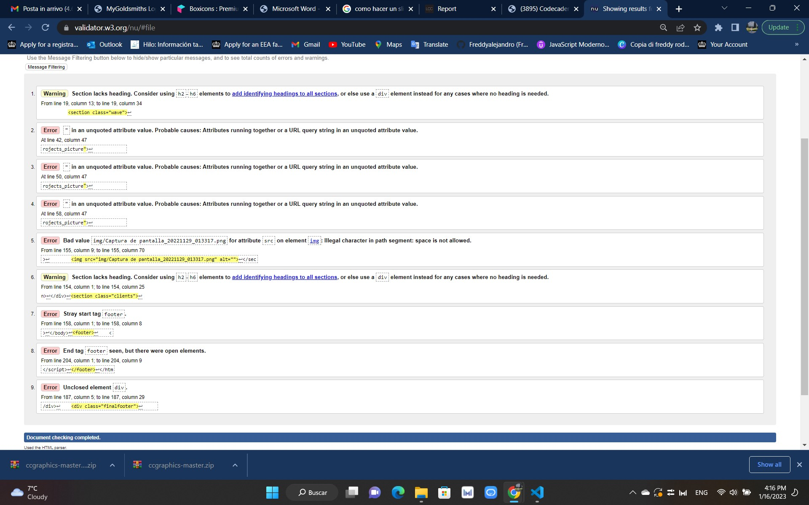

I'm Freddy Alejandro Rodriguez Figueroa
Introduction:
This website is from a London construction company run by a friend of my family, basically I wanted to give a new look to their existing website, using some of their stuff, but adding the things we learned in class I wanted to give it a modern look and luxery home look of your brand
Background
Planin
In order to create my web page, first make the Wireframes and use the figma application. I started with an application of a normal web page taken from the internet but later a great friend of mine gave me permission to manipulate the web page of his company and if he liked the final result we could implement it on his real web page so I have all the permissions to use the logos and images of the company lcc london costractor constructor
In the process I started by hand drawing a template of the new home and contact us, see what tools I could use and the fonts I would have to use. check out some advanced javascript techniques to create photo slider, applying estules was the only time that I communicated with the owner of the web because I wanted to capture the real concept of the company
Implementation
To develop this idea I have learned a lot about the positioning of the section, in addition to being able to move it, how to use the grids, how to move those grids, respect the margins so that everything stays within the browser, as well as how to simplify my code
What cost me the most was the implementation of js in my project. I had to watch many videos on how to make a sliding menu. I tried many times and even started my website again, but as you can see at the top there is a gallery of images that is very didactic
Even though it is a very simple website, I consider that it is well built. I like the colors chosen and the gallery of images
Evaluation
State 3 things that you think worked particularly well in your work
State 3 things that you think might be improved. How would you do them differently
Appendices
Evidence of the process

Evidence of the process

Evidence of the process
Evidence of the process